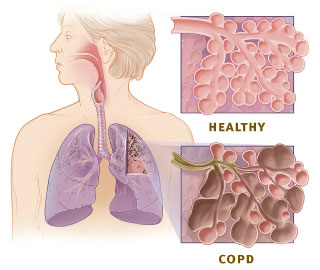
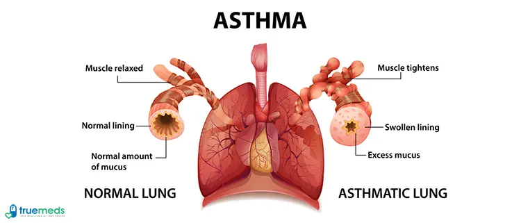
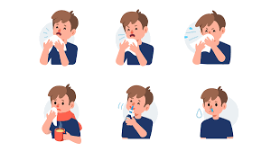
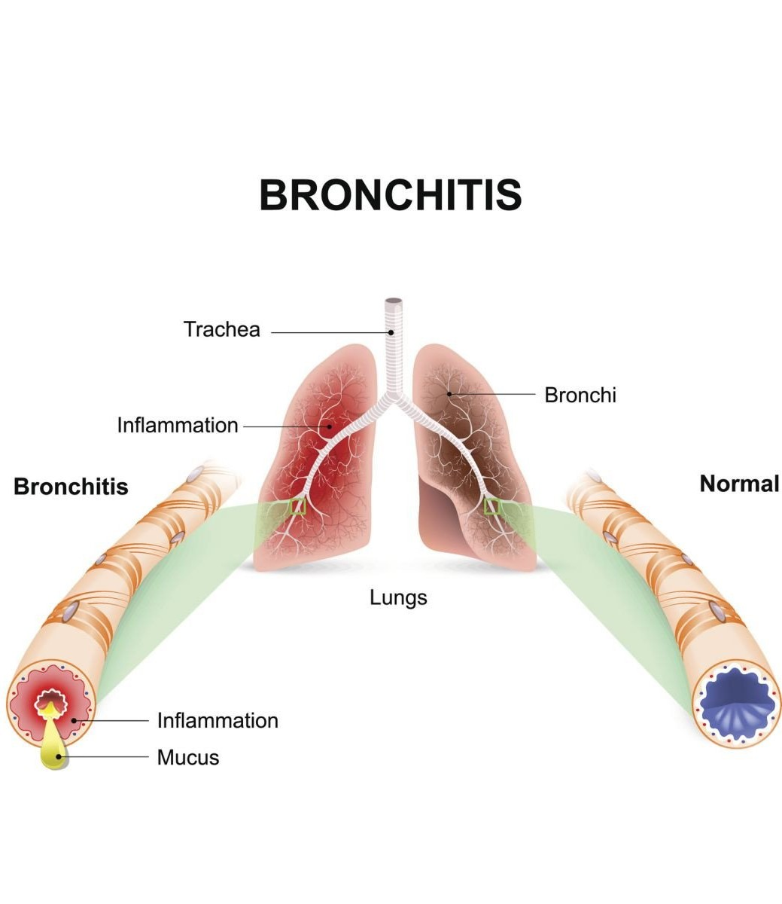
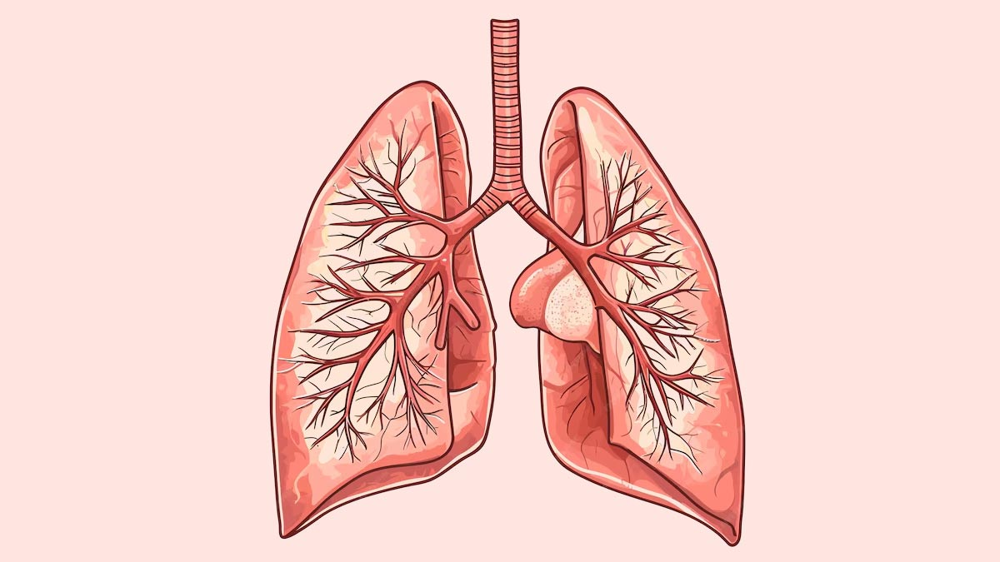

Managing COPD
- 🚭Quit Smoking: Smoking is the primary cause of COPD. Seek support to quit smoking.
- 💊Medication: Use prescribed inhalers and medicines regularly.
- 📈Monitor Symptoms: Track your breathing and consult your doctor as needed.
- 💪Exercise: Engage in light physical activities to strengthen lung function.
- ⚠️Manage Exacerbations: Recognize early signs of worsening and seek medical help.

Managing Pneumonia
- 💊Complete Antibiotics: Finish the course as prescribed.
- 🛏️Rest: Stay hydrated and allow your body to heal.
- 💨Monitor Breathing: Keep an eye on oxygen levels; seek care if necessary.
- 🌫️Avoid Pollution: Stay away from irritants like smoke or dust.

Managing Asthma
- 💨Avoid Triggers: Identify and avoid asthma triggers such as allergens or smoke.
- 💊Inhalers: Use your prescribed inhalers to control symptoms.
- 🩺Regular Checkups: Visit your doctor regularly for lung function tests.
- 🚶♀️Exercise Caution: Exercise in a controlled environment to prevent flare-ups.

Managing URTI
- 💧Stay Hydrated: Drink plenty of fluids to loosen mucus.
- 🛏️Rest: Rest to allow your body to recover from infection.
- 😷Cover Your Cough: Prevent the spread of germs by coughing into a tissue or elbow.
- 💊Medication: Use over-the-counter medications to relieve symptoms.

Managing Bronchitis
- 💨Avoid Smoking: Smoking worsens bronchitis symptoms, so avoid smoking and second-hand smoke.
- 🧳Stay Warm: Keep warm to help ease chest discomfort.
- 💊Medications: Use prescribed cough medicine or antibiotics if necessary.
- 🌬️Use a Humidifier: A humidifier can help relieve coughing and discomfort.

Learn More
General Health Tips
- 🍏Healthy Diet: Include fruits and vegetables to boost immunity.
- 💧Hydration: Drink at least 8 glasses of water daily.
- 🧘♀️Breathing Exercises: Practice deep breathing for better lung capacity.